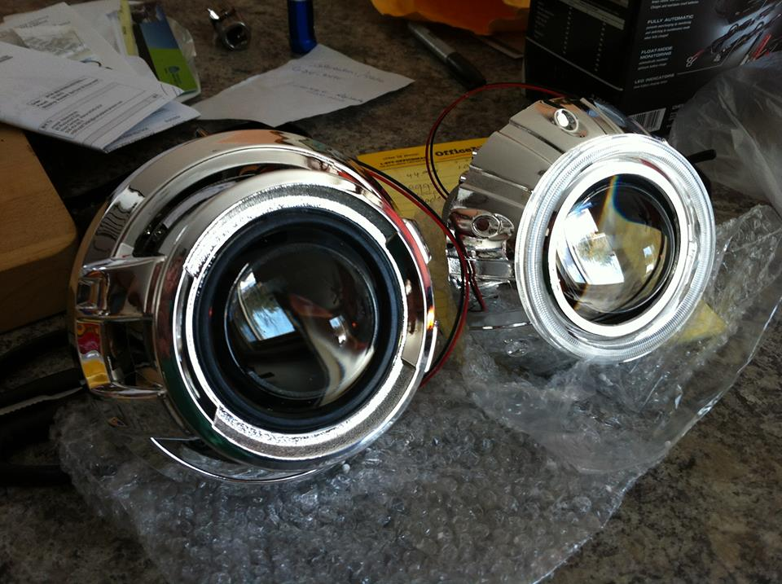
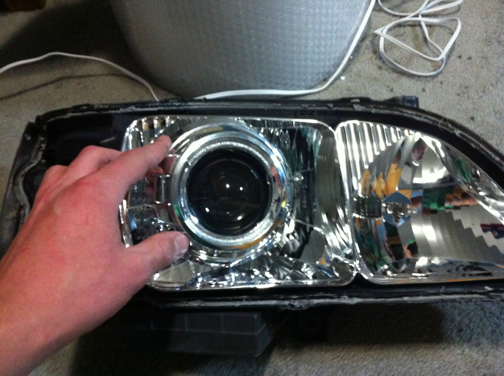
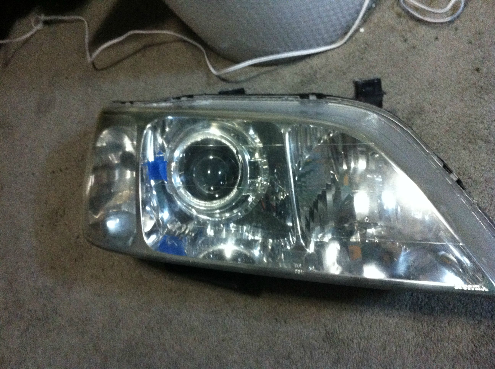

I've decided to do a projector retrofit. There's nothing wrong with the current headlights I just really like the appeal of the crisp cutoff.

I separated the lense from the headlight house so I could begin to mount things in place. Took a little bit of work with the heat gun but I managed to remove them safely.

Test fit of the Apollo shroud.

Future look to come.

The shrouds needed a little trimming to fit in place but things are starting to look good.


One done. Comparison.

Overall I'm pretty happy with it. The gap between the shroud and housing bug me a big but I can live with it.